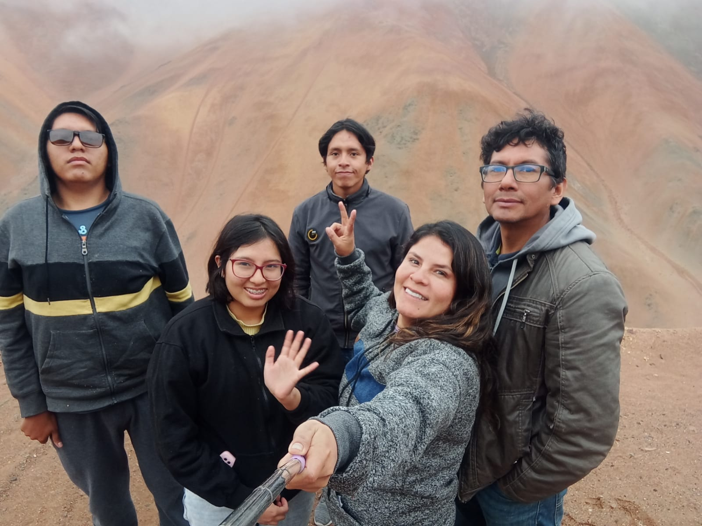

Vivo con mi mamá y mis hermanos, nuestra casa está en una zona algo alejada, sin embargo, cada vez parece estar más cerca del resto de la ciudad. Nos hemos mantenido unidos todo este tiempo e intentamos comunicarnos de la mejor manera para tener una buena relación entre todos
Nuestros animales también son parte de la familia. Tenemos 4 gatos, de los cuales tres fueron adoptados cuando llegaron a la casa. También tenemos una perra pastor alemán, que es hija de una mascota anterior que nos acompañó durante toda nuestra infancia. Recientemente trajeron pollitos, que a día de hoy han crecido bastante grandes y fuertes.